FDG-18 Production Unit
by Cyclotron
Functional Technical Brief & Room Data Sheets — Pre-Programme Stage
Functional Technical Brief & Room Data Sheets — Pre-Programme Stage
01
This document presents the recommended functional organization for an FDG-18 production unit integrated into the Nuclear Medicine Department of an Anti-Cancer Centre. The objective of the unit is to ensure local production of Fluorine-18, followed by synthesis of ¹⁸F-FDG, a radiopharmaceutical used for PET-CT examinations, particularly in oncology.
Recommended Hospital Position
| Level | Designation |
|---|---|
| Department / Pole | Medical Imaging |
| Service | Nuclear Medicine |
| Sub-service | PET Radiopharmacy / Cyclotron Unit |
| Main function | Production of Fluorine-18, synthesis of FDG-18, quality control, dose dispensing and support to PET-CT activity |
The unit must be designed as a complete technical, radiopharmaceutical and regulatory environment integrating radiation protection, good manufacturing practice, quality control, staff safety, flow control and continuity of service.
02
This organization must ensure radiological safety, pharmaceutical quality, batch traceability, separation of flows, radioactive waste management and regulatory compliance.
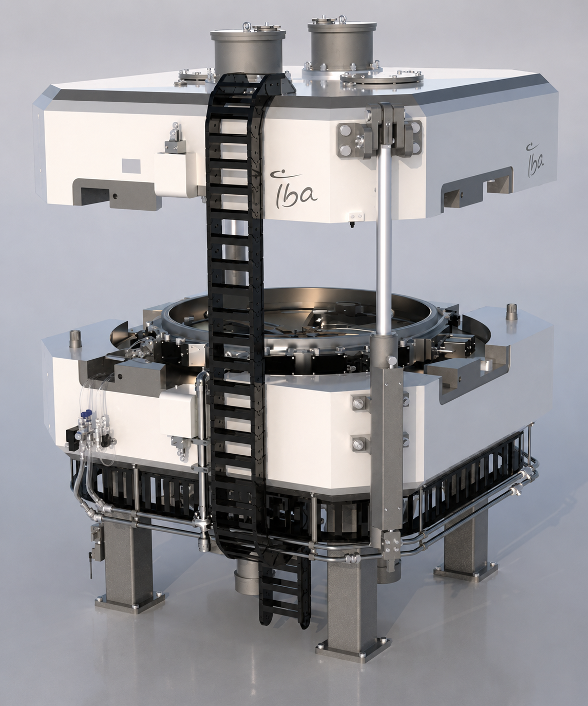
IBA Cyclone KIUBE 180 — Full 3D equipment model showing target ports, proton source and cable management
Cyclone KIUBE 180 installed in real cyclotron bunker — labyrinth entrance, CCTV, radiation warning light, shielded transfer line and RADIATION CONTROLLED AREA sign
03
| Sub-System | Spaces / Rooms | Function |
|---|---|---|
| Cyclotron Zone | Cyclotron bunker, control room, technical room, gas room, cooling, electrical cabinets, maintenance access | Primary production of Fluorine-18 radionuclide |
| PET Radiochemistry Zone | Hot Lab, shielded cells, synthesis modules, transfer line, purification, formulation, filtration | Conversion of Fluorine-18 into injectable FDG-18 |
| Quality Control | QC laboratory, HPLC/GC, pH, endotoxins, radiochemical purity, quality documentation | Verification and batch release per pharmaceutical requirements |
| Dispensing | Dispensing station, dose calibrator, shielded dose pass-through, temporary dose storage | Preparation of patient doses |
| Radioactive Waste | Decay storage, shielded containers, solid/liquid waste per process | Management and traceability of short-lived waste |
| Staff and Safety | Personnel/material airlock, changing area, PPE, dosimetry, emergency decontamination, access control | Staff protection and access control |
| Technical Support | Dedicated electrical supply, UPS if required, HVAC, exhaust, BMS, maintenance, hot-zone housekeeping room | Technical continuity and safe operation |

Isometric Layout — FDG-18 Production Unit / Cyclotron Zone
04
Cold Zone
Uncontrolled area. No restriction on access.
Controlled / Hot Zone
Cyclotron bunker, Hot Lab, Hot Cells. Authorised access, radiation monitoring mandatory.
Clean / GMP Zone
Synthesis, QC, dispensing. ISO 14644 + EU GMP Annex 1 compliance.
Technical Zone
Electrical, HVAC, cooling. Maintenance without entering controlled zone.
| Main Room | Strong Relationship | Proximity Objective |
|---|---|---|
| Cyclotron Bunker | Cyclotron control room | Supervision, interlock, emergency stop, CCTV and alarms |
| Cyclotron Bunker | Cyclotron technical room | Equipment connection, maintenance and utilities |
| Cyclotron Bunker | Technical gas room | Gas supply per supplier requirements |
| Cyclotron Bunker | Hot Lab / PET Radiochemistry | Fast and shielded transfer of Fluorine-18 |
| Hot Lab / Radiochemistry | QC Lab | Quality control before batch release |
| QC / Dispensing | PET injection | Rapid dose availability and reduction of delays |
| Hot Lab / Dispensing | Radioactive waste | Management and decay of short-lived waste |
| Personnel airlock | Controlled zone entry | Access control and staff protection |
The cyclotron zone must remain within a controlled technical zone, with a short relationship to PET radiochemistry and controlled access.
IBA Facility Layout — Drawing Ref. 0746770004b
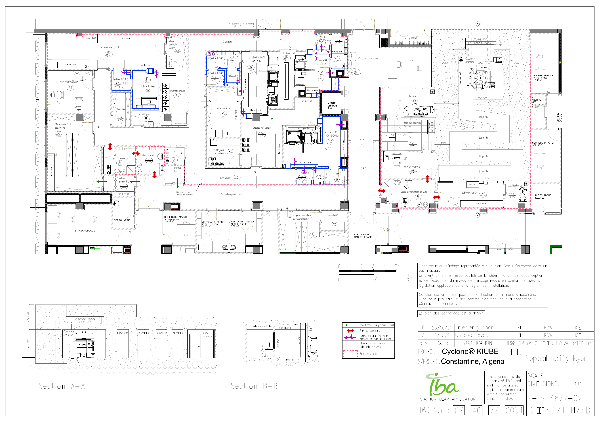
IBA (Ion Beam Applications) — FDG-18 Production Unit Spatial Layout. Drawing 0746770004b — indicative, shielding thicknesses shown for reference only, to be confirmed by radiation protection specialist.
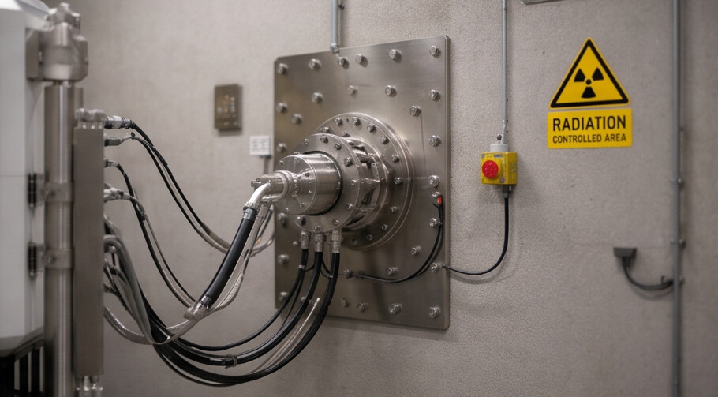
Shielded Transfer Line Penetration — Radiation Controlled Area
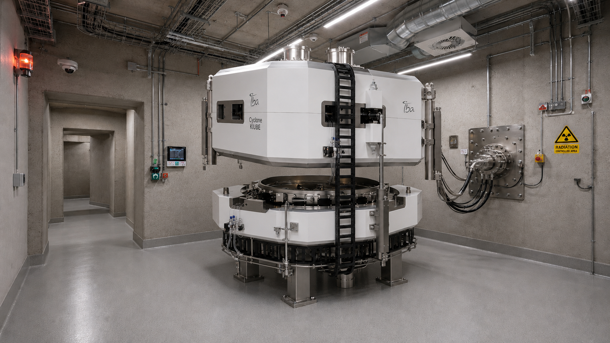
Cyclotron Bunker — Maintenance Access & Equipment Connections
05
| Reference | Application in the Project |
|---|---|
| IAEA TRS 471 | Planning and implementation of a cyclotron facility for production of radionuclides and radiopharmaceuticals. |
| IAEA FDG Facility Design | Facility design, FDG production, laboratory organisation, layout, equipment and quality requirements. |
| IAEA GSR Part 3 | Radiation protection and safety of ionizing radiation sources — International Basic Safety Standards. |
| EU GMP Vol. 4 Annex 1 | Manufacture of sterile products: controlled environment, contamination control strategy and qualification. |
| EU GMP Vol. 4 Annex 3 | Specific requirements for the manufacture of radiopharmaceuticals. |
| ISO 14644-1:2015 | Classification of air cleanliness in cleanrooms and clean zones. |
| WHO GMP Radiopharmaceuticals | Good manufacturing practices for radiopharmaceutical products. |
| USP <825> | Preparation, compounding, dispensing and repackaging of radiopharmaceuticals. |
| AERB Medical Cyclotron Guide | Specialised regulatory guide for design, operation and decommissioning of a medical cyclotron facility. |
| Cyclotron Supplier (IBA) | Mandatory data: footprint, loads, power, cooling, gases, shielding, maintenance, openings and installation route. |
05b
IBA (Ion Beam Applications) — Drawing 0746770410b Rev. B, 25.10.2021. This document establishes the confirmed equipment scope for the Cyclone KIUBE 180 installation: cyclotron, targets, synthesis modules (Synthera+), hot cells, quality control suite and radiation monitoring. All item references (Cy.xx, Hc.xx, Ch.xx, Qc.xx, Re.xx) used in the Room Data Sheets below trace back to this list.
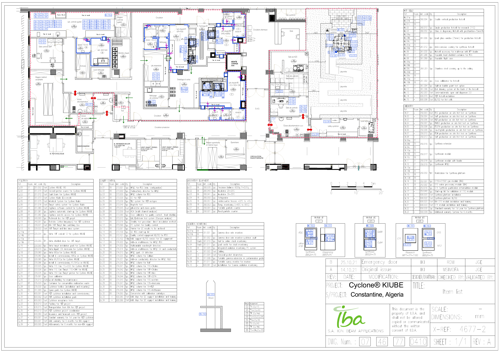
IBA Item List Ref. 0746770410b Rev. B — Cyclone KIUBE 180 complete equipment scope. Proprietary document — shown for architectural coordination reference only.
06
Pre-programme values — to be adjusted per cyclotron model, radiopharmacy concept, shielding calculations, GMP requirements and site constraints.
| Cyclotron Bunker / Cyclotron Casemate | 35 – 50 m² |
| Cyclotron Control Room | 8 – 12 m² |
| Cyclotron Technical Room | 12 – 25 m² |
| Technical Gas Room | 6 – 12 m² |
| Hot Lab / PET Radiochemistry / FDG Synthesis | 15 – 30 m² |
| Hot Cells / Shielded Cells | Per equipment |
| FDG Quality Control Laboratory | 10 – 15 m² |
| FDG Dose Dispensing | 8 – 12 m² |
| Personnel / Material Airlock | 4 – 8 m² |
| Radioactive Waste / Decay Storage | 4 – 8 m² |
| Hot-Zone Housekeeping Room | 3 – 5 m² |
07
Values are to be used during the pre-programme stage and must be validated by specialist studies.
Cyclotron Bunker / Cyclotron Casemate
Nuclear Medicine · PET Radiopharmacy / FDG-18 Production
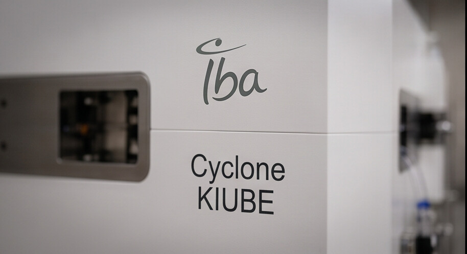
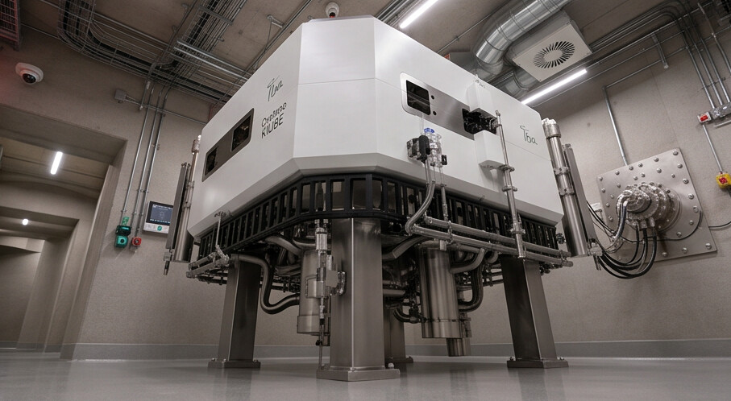
Cyclotron Bunker — Labyrinth entrance / IBA KIUBE nameplate / Internal services view
General Information
| Field | Data |
|---|---|
| Room name | Cyclotron Bunker / Cyclotron Casemate |
| Room code | To be created per project codification — example: 3J-1J-CYC-2.001 |
| Service | Nuclear Medicine |
| Sub-service | PET Radiopharmacy / FDG-18 Production |
| Indicative area | 40.00 m² — pre-programme value |
| Service hours | 24 hours / per production schedule |
| Occupation | Technical room in controlled radiological zone |
| Staffing | 0 permanent; occasional access by authorised personnel only |
| Description | Shielded room intended to house the IBA Cyclone KIUBE 180 medical cyclotron for production of Fluorine-18 used in FDG-18 synthesis. The room provides radiation protection, access safety, controlled ventilation, cooling, gas networks and shielded transfer to the Hot Lab. Labyrinth or shielded door access per radiation protection study. |
| Acoustic insulation | ≥ 45 dB recommended or per acoustic study |
| Strong relationships | Control room, technical room, gas room, Hot Lab / PET Radiochemistry, radioactive waste |
Appearance and Finishes
| Element | Specification | Observation |
|---|---|---|
| Ceiling | Shielded reinforced concrete | Thickness per radiation protection calculation |
| Ceiling | Washable epoxy paint | Decontaminable surface |
| Walls | High-density reinforced concrete | Gamma/neutron shielding per study |
| Walls | Washable epoxy paint | Smooth, resistant, decontaminable surface |
| Floor | Continuous industrial epoxy resin | Resistant to heavy and rolling loads |
| Floor | Anti-slip, non-porous | Cleaning and decontamination |
| Skirting | Coved skirting 10 to 15 cm | Sealed and washable |
| Access | Radiological shielded / labyrinth per approved layout | Interlock, access control and signage where required |
| Signage | Radiation / controlled access | Warning light and alarm |
Furniture and Utilities
| Description | Category | Qty | Observation |
|---|---|---|---|
| Safety procedure box | Utility | 01 | Emergency procedures and lockout/tagout |
| Radiation protection PPE cabinet | Utility | 01 | Preferably outside bunker |
| Decontamination kit | Safety | 01 | In adjacent zone |
| Suitable fire extinguisher | Safety | 01 | To be validated by fire safety |
| Emergency lighting | Safety | As required | Mandatory |
Equipment and Networks
| Description | Ref. IBA | QTY | ELE | HVAC/Cool. | GAS/DRN | DATA/BMS | Power / Obs. |
|---|---|---|---|---|---|---|---|
| PET medical cyclotron — Cyclone KIUBE 180 | Cy.01 | 01 | Yes | Yes | Yes | Yes | Per supplier TDS |
| Second proton source | Cy.02 | 01 | Yes | — | — | Yes | Included |
| 18F target line switching box | Cy.12 | 01 | Yes | — | Yes | Yes | Low |
| 18F conical targets (Nirta) | Cy.14 | 2× | Yes | Yes | Yes | Yes | Per supplier |
| Shielded transfer line (to Hot Lab) | — | 01 | Yes | — | — | Yes | Low |
| Internal CCTV | Re.02 | 01 | Yes | — | — | Yes | 50 W |
| Intercom | — | 01 | Yes | — | — | Yes | 50 W |
| Emergency stops | — | Several | Yes | — | — | Yes | Low |
| Gamma dose rate monitor | Re.02 | Per study | Yes | — | — | Yes | Low |
| Radiation / controlled access signage | — | 01 lot | Yes | — | — | Yes | Low |
Coordination Notes
Cyclotron Control Room
Nuclear Medicine · PET Radiopharmacy
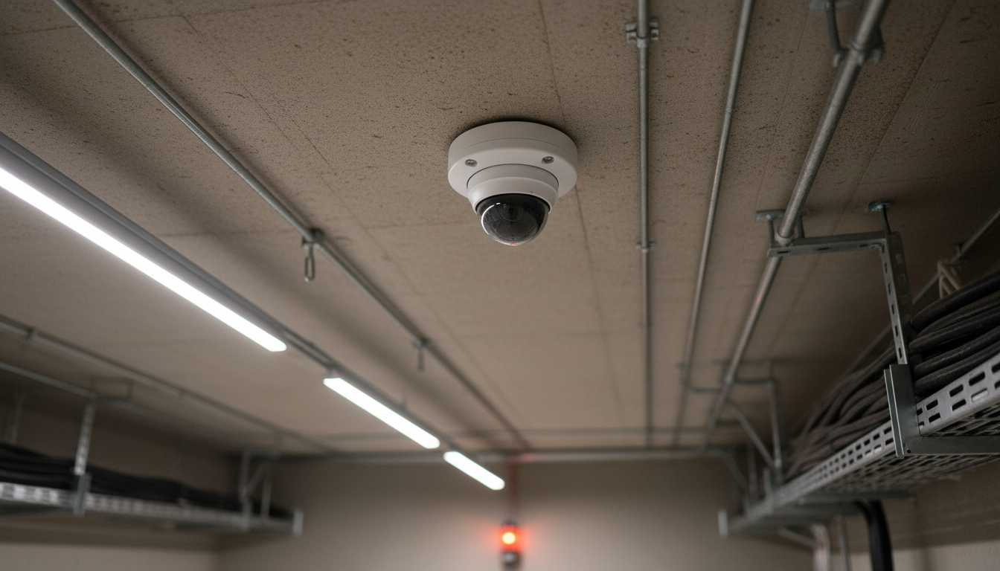
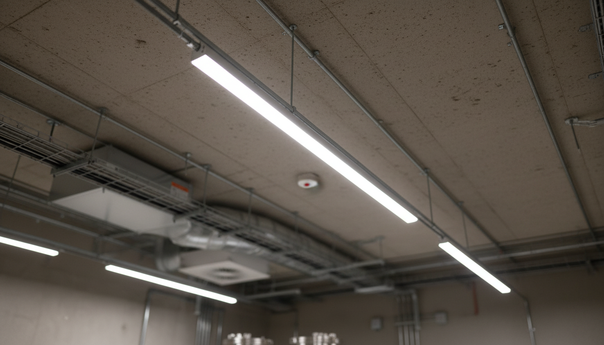
CCTV surveillance of cyclotron bunker / Linear LED ceiling lighting — control station environment
General Information
| Field | Data |
|---|---|
| Room name | Cyclotron Control Room |
| Indicative area | 8 to 12 m² |
| Service hours | Per production / supervision |
| Occupation | Authorised technical personnel |
| Staffing | 1 to 2 persons |
| Description | Room intended for cyclotron operation, control, monitoring and emergency shutdown. Receives the Zephiros control interfaces (Cy.07–09), alarms, radiation monitors, CCTV displays and communication systems. No direct glazed opening to bunker — visibility via CCTV only. |
| Acoustic insulation | ≥ 35 to 40 dB recommended |
| Strong relationships | Cyclotron bunker, technical room, radiation protection |
Appearance and Finishes
| Element | Specification | Observation |
|---|---|---|
| Ceiling | Washable technical suspended ceiling | Maintenance access if necessary |
| Walls | Washable paint | Control station environment |
| Floor | Conductive PVC or technical resin | Easy maintenance |
| Skirting | 10 to 15 cm | Washable |
| Door | Access control | Authorised personnel only |
Furniture and Utilities
| Description | Category | Qty | Observation |
|---|---|---|---|
| Worktop / console | Furniture | 01 | Supervision station |
| Operator chairs | Furniture | 02 | Ergonomic |
| Documentation cabinet | Utility | 01 | Procedures and registers |
Equipment and Networks
| Description | Ref. IBA | QTY | ELE | HVAC/Cool. | GAS/DRN | DATA/BMS | Power / Obs. |
|---|---|---|---|---|---|---|---|
| Cyclotron control console (Zephiros) | Cy.07–09 | 01 | Yes | — | — | Yes | Per supplier |
| CCTV monitors | Re.05 | 01 lot | Yes | — | — | Yes | Per system |
| Radiation monitor display | Re.05 | 01 lot | Yes | — | — | Yes | Low |
| Intercom | — | 01 | Yes | — | — | Yes | — |
| Emergency stop | — | 01 | Yes | — | — | Yes | Low |
| BMS / alarms panel | — | 01 lot | Yes | — | — | Yes | Low |
Coordination Notes
Cyclotron Technical Room
Nuclear Medicine · PET Radiopharmacy
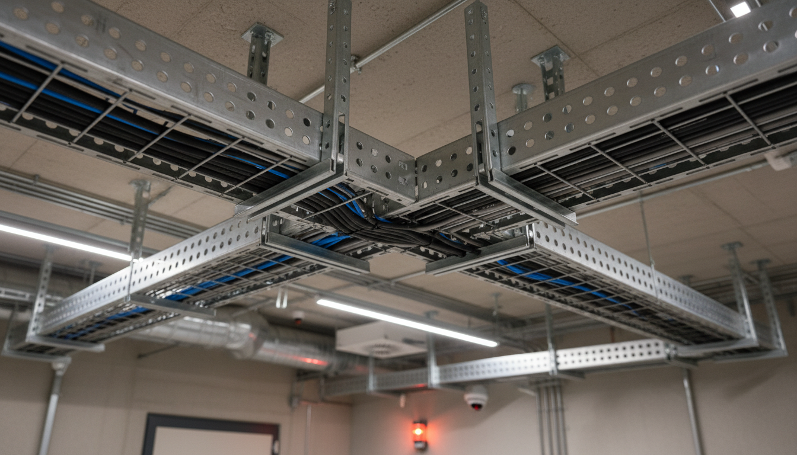
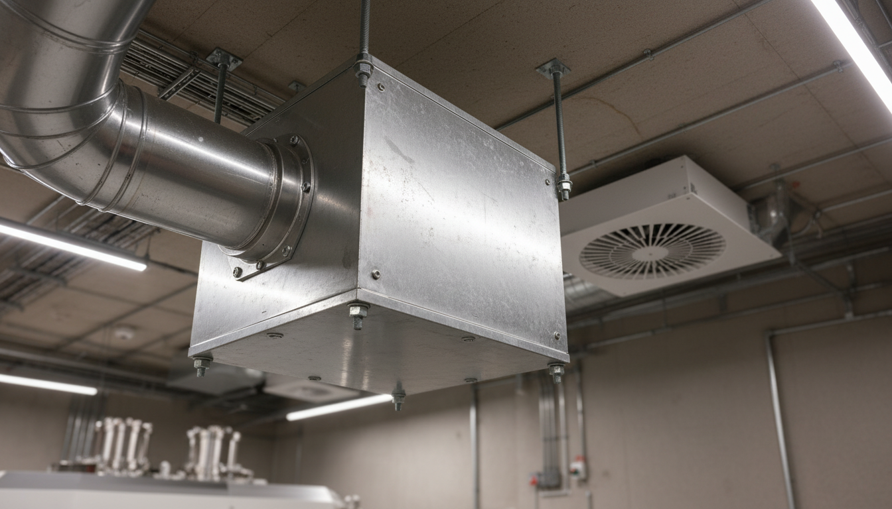
Cable trays and service routes on structural ceiling / HVAC ductwork and controlled ventilation
General Information
| Field | Data |
|---|---|
| Room name | Cyclotron Technical Room |
| Indicative area | 12 to 25 m² |
| Service hours | 24 hours |
| Occupation | Occasional maintenance |
| Staffing | 0 permanent; 1 to 2 persons during intervention |
| Description | Room intended for electrical cabinets, control equipment, cooling circuits, technical interfaces and utilities required for cyclotron operation. Access for maintenance only — no permanent occupation. Door width compatible with equipment access. |
| Acoustic insulation | Per equipment and acoustic study |
| Strong relationships | Cyclotron bunker, control room, electrical room, HVAC |
Appearance and Finishes
| Element | Specification | Observation |
|---|---|---|
| Ceiling | Painted concrete or technical ceiling | Robust and accessible |
| Walls | Resistant washable paint | Technical room |
| Floor | Industrial resin or technical floor | Loads and maintenance |
| Skirting | 10 to 15 cm | Resistant |
| Door | Width compatible with equipment maintenance | Equipment access |
Furniture and Utilities
| Description | Category | Qty | Observation |
|---|---|---|---|
| Spare parts / tools storage | Utility | As required | Authorised spare parts and tools only |
Equipment and Networks
| Description | Ref. IBA | QTY | ELE | HVAC/Cool. | GAS/DRN | DATA/BMS | Power / Obs. |
|---|---|---|---|---|---|---|---|
| Electrical cabinets (Cy.01 auxiliaries) | — | 01 lot | Yes | — | — | Yes | To be confirmed |
| Control panels | — | 01 lot | Yes | — | — | Yes | To be confirmed |
| Associated cooling circuits | — | Per supplier | Yes | Yes | DRN if req. | Yes | Per supplier |
| Temperature detection | — | 01 lot | Yes | Yes | — | Yes | BMS |
| Fire detection | — | 01 lot | — | — | — | Yes | Fire alarm system |
| Maintenance sockets | — | As required | Yes | — | — | — | Per ELE |
| Technical ventilation | — | 01 lot | Yes | Yes | — | Yes | Per HVAC |
Coordination Notes
Cyclotron Technical Gas Room
Nuclear Medicine · PET Radiopharmacy
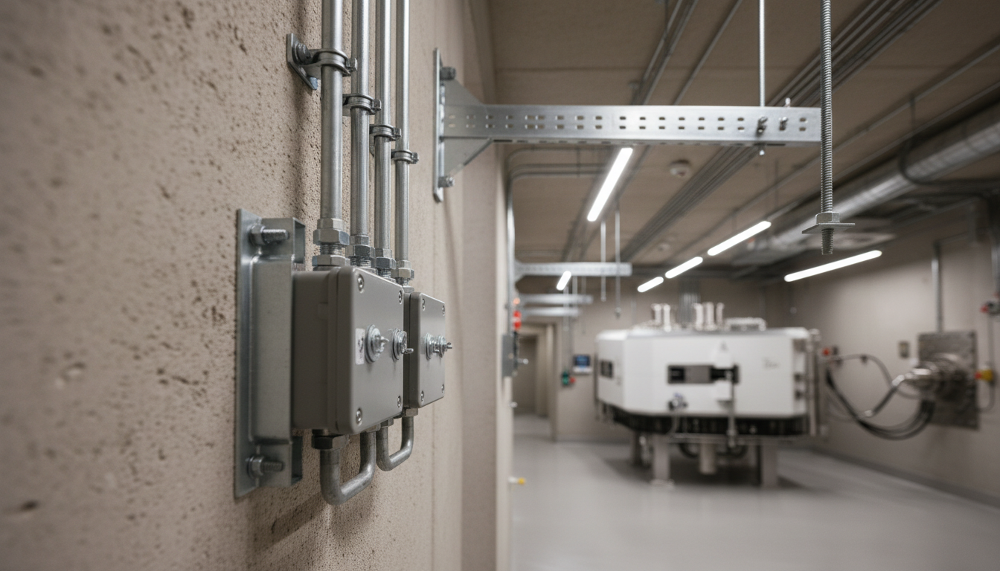
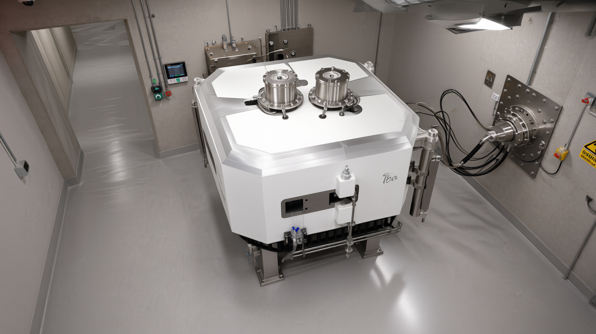
Electrical distribution panels / Cyclone KIUBE target ports requiring process gas supply (18F, 68Ga, 11C, 15O, 64Cu)
General Information
| Field | Data |
|---|---|
| Room name | Cyclotron Technical Gas Room |
| Indicative area | 6 to 12 m² |
| Service hours | 24 hours |
| Occupation | Occasional maintenance |
| Staffing | 0 permanent |
| Description | Room intended for storage, manifolds and controlled distribution of gases required for the IBA Cyclone KIUBE 180 and associated processes. Gas list to be confirmed with IBA supplier — includes process gases for 18F, 68Ga, 13N, 11C, 15O and 64Cu targets per equipment list ref. 0746770410b. |
| Acoustic insulation | Standard, per equipment |
| Strong relationships | Cyclotron bunker, technical room, PET radiochemistry |
Appearance and Finishes
| Element | Specification | Observation |
|---|---|---|
| Ceiling | Washable / technical | Suitable ventilation |
| Walls | Resistant paint | Gas safety |
| Floor | Resin or treated concrete | Resistant |
| Door | Per gas safety requirements | Ventilated if required |
| Signage | Technical gases / safety | Mandatory |
Furniture and Utilities
| Description | Category | Qty | Observation |
|---|---|---|---|
| Cylinder rack | Utility | Per supplier | Secure fixing |
Equipment and Networks — IBA Target Gas Requirements
| Description | Ref. IBA | QTY | ELE | HVAC/Cool. | GAS/DRN | DATA/BMS | Power / Obs. |
|---|---|---|---|---|---|---|---|
| Manifolds / pressure regulators | — | Per supplier | — | — | Yes | Yes | Per supplier |
| 18F target gas supply | Cy.12–16 | 01 | — | — | Yes | Yes | BMS |
| 68Ga / 13N / 11C / 15O / 64Cu target gases | Cy.17–24 | Per targets | — | — | Yes | Yes | Per supplier |
| Safety ventilation | — | 01 lot | Yes | Yes | — | Yes | Per HVAC |
| Earthing | — | 01 lot | Yes | — | — | — | Per ELE |
| Safety signage | — | 01 lot | Yes | — | Yes | Yes | Low |
Coordination Notes
PET Hot Lab / FDG-18 Radiochemistry
Nuclear Medicine · PET Radiopharmacy — GMP Zone
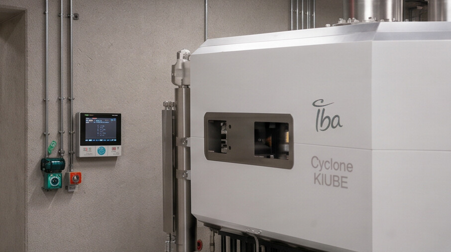
Shielded 18F transfer line wall penetration — RADIATION CONTROLLED AREA / IBA KIUBE wall control panel and synthesis interface
General Information
| Field | Data |
|---|---|
| Room name | PET Hot Lab / FDG-18 Radiochemistry |
| Indicative area | 15 to 30 m² |
| Service hours | Per production schedule |
| Occupation | Radiopharmacy / radiochemistry personnel |
| Staffing | 1 to 3 persons |
| Description | Room intended for receiving Fluorine-18 from the cyclotron via shielded transfer line, automated FDG-18 synthesis using Synthera+ platform (IBA), purification, formulation and transfer to quality control or dispensing. Cleanroom classification per contamination control strategy and GMP validation. |
| Acoustic insulation | ≥ 35 dB recommended |
| Strong relationships | Cyclotron bunker, Hot Cells, QC lab, dispensing, radioactive waste |
Appearance and Finishes
| Element | Specification | Observation |
|---|---|---|
| Ceiling | Washable, cleanroom-compatible | Class per GMP/ISO |
| Walls | Smooth, antibacterial, washable | Decontaminable |
| Floor | Cleanroom resin or PVC | Decontaminable |
| Skirting | Coved 10 to 15 cm | Sealed |
| Door | Access control | Controlled zone |
| Surfaces | Non-porous, chemical-resistant | Validated cleaning protocol |
Furniture and Utilities
| Description | Category | Qty | Observation |
|---|---|---|---|
| Technical workbenches | Furniture | As required | Chemical-resistant |
| Consumables cabinets | Utility | As required | Limited storage |
| Waste collectors | Safety | As required | Radioactive waste |
Equipment and Networks
| Description | Ref. IBA | QTY | ELE | HVAC/Cool. | GAS/DRN | DATA/BMS | Power / Obs. |
|---|---|---|---|---|---|---|---|
| Hot Cells — double vertical production | Hc.01 | 3× | Yes | Yes | DRN if req. | Yes | Per equipment |
| Class A dispensing hot cell (75mm Pb) | Hc.03 | 01 | Yes | Yes | — | Yes | Per equipment |
| Synthera+ synthesis module | Ch.10–11 | 3× | Yes | Yes | TBC | Yes | Per manufacturer |
| Synthera+ HPLC purification | Ch.12 | 01 | Yes | — | — | Yes | Per equipment |
| 18F transfer line (from bunker) | Cy.12 | 01 | Yes | — | — | Yes | Low |
| Semi-automatic open vial dispenser | Hc.13 | 01 | Yes | — | — | Yes | Per equipment |
| Dose calibrator | Hc.10 | 01 | Yes | — | — | Yes | Low |
| Controlled exhaust | — | 01 lot | Yes | Yes | — | Yes | Per HVAC |
| Radiation monitoring | Re.01 | 01 lot | Yes | — | — | Yes | Low |
Coordination Notes
FDG-18 Quality Control Laboratory
Nuclear Medicine · PET Radiopharmacy
IBA Cyclone KIUBE 180 — equipment identity and installation reference (Cy.01). QC suite (Qc.01–Qc.32) validates every batch produced by this machine.
General Information
| Field | Data |
|---|---|
| Room name | FDG-18 Quality Control Laboratory |
| Indicative area | 10 to 15 m² |
| Service hours | Per production schedule |
| Occupation | QC personnel / radiopharmacist |
| Staffing | 1 to 2 persons |
| Description | Room intended for FDG-18 quality controls before batch release: radiochemical purity, identification, pH, endotoxins, radioactivity, sterility per procedure and regulation. Houses HPLC (Qc.01), GC (Qc.04), TLC (Qc.05), dose calibrator (Qc.09), endotoxin test (Qc.10), sterility test (Qc.11) and documentation workstation. |
| Acoustic insulation | ≥ 35 dB recommended |
| Strong relationships | Hot Lab, dispensing, quality documentation |
Appearance and Finishes
| Element | Specification | Observation |
|---|---|---|
| Ceiling | Washable | Laboratory-compatible |
| Walls | Washable, antibacterial | Decontaminable |
| Floor | PVC or technical resin | Resistant |
| Skirting | 10 to 15 cm | Washable |
| Workbenches | Chemical-resistant | Easy cleaning |
Furniture and Utilities
| Description | Category | Qty | Observation |
|---|---|---|---|
| QC workbench with storage | Furniture | 01 lot | Chemical-resistant |
| Chemical cabinet | Utility | 01 | Ventilated if required |
| Laboratory refrigerator | Equipment | 01 | Per procedure / temperature monitoring |
Equipment and Networks
| Description | Ref. IBA | QTY | ELE | HVAC/Cool. | GAS/DRN | DATA/BMS | Power / Obs. |
|---|---|---|---|---|---|---|---|
| HPLC for FDG (minimum config) | Qc.01 | Per process | Yes | — | — | Yes | Per equipment |
| Radioactivity detector for HPLC | Qc.02 | 01 | Yes | — | — | Yes | Per equipment |
| GC for PET | Qc.04 | 01 | Yes | — | — | Yes | Per equipment |
| TLC system | Qc.05 | 01 | Yes | — | — | — | Low |
| pH meter + micro probe | Qc.07 | 01 | Yes | — | — | — | Low |
| Dose calibrator (QC) | Qc.09 | 01 | Yes | — | — | Yes | Low |
| LAL endotoxin test system | Qc.10 | 01 | Yes | — | — | Yes | Per equipment |
| Sterility test equipment | Qc.11 | 01 | Yes | — | — | Yes | Per equipment |
| Osmometer | Qc.32 | 01 | Yes | — | — | — | Per equipment |
| QC PC system + printer | Qc.12–13 | 01 | Yes | — | — | Yes | 500 W |
Coordination Notes
FDG-18 Dose Dispensing
Nuclear Medicine · PET Radiopharmacy
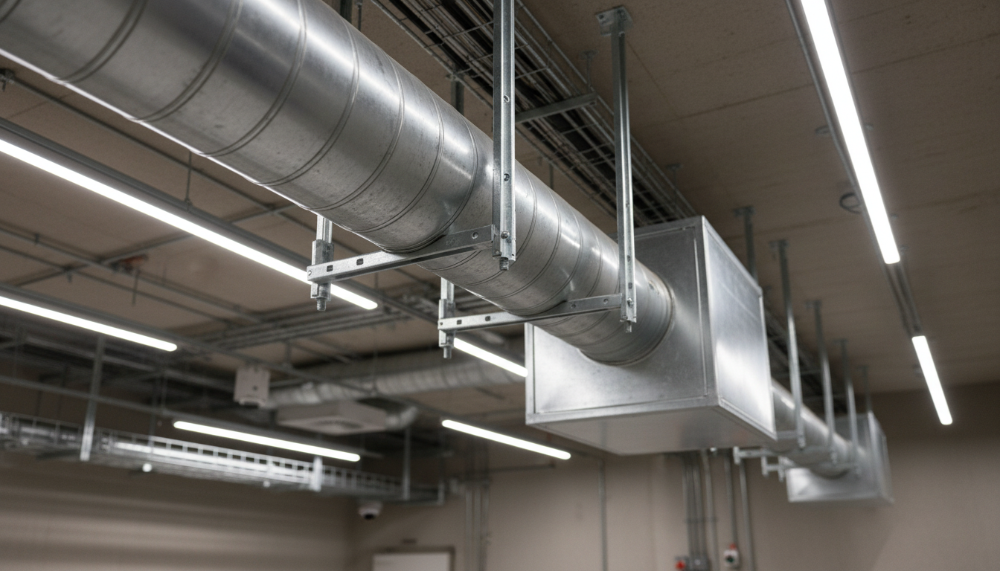
Services corridor providing controlled access between dispensing, QC and Hot Lab — short physical relationship required
General Information
| Field | Data |
|---|---|
| Room name | FDG-18 Dose Dispensing |
| Indicative area | 8 to 12 m² |
| Service hours | Per PET-CT schedule |
| Occupation | Radiopharmacy personnel |
| Staffing | 1 to 2 persons |
| Description | Room intended for preparation, measurement, fractionation and availability of FDG-18 doses for PET-CT patients. Short physical relationship to PET injection required. Shielded dispensing station, dose calibrator and traceability workstation. Shielded dose pass-through to injection area if required by layout. |
| Acoustic insulation | Standard |
| Strong relationships | QC lab, Hot Lab, PET injection room, radioactive waste |
Appearance and Finishes
| Element | Specification | Observation |
|---|---|---|
| Ceiling | Washable | Clean zone per process |
| Walls | Washable, antibacterial | Decontaminable |
| Floor | Decontaminable resin or PVC | Resistant |
| Skirting | Coved 10 to 15 cm | Sealed |
| Door | Access control | Controlled zone |
Furniture and Utilities
| Description | Category | Qty | Observation |
|---|---|---|---|
| Worktop | Furniture | 01 lot | Decontaminable |
| Consumables cabinet | Utility | 01 | Limited storage |
| Shielded waste collector | Safety | 01 | Short-lived waste |
Equipment and Networks
| Description | Ref. IBA | QTY | ELE | HVAC/Cool. | GAS/DRN | DATA/BMS | Power / Obs. |
|---|---|---|---|---|---|---|---|
| Shielded dispensing station (Class A) | — | 01 | Yes | If req. | — | Yes | Per equipment |
| Dose calibrator | Hc.10 | 01 | Yes | — | — | Yes | Low |
| Shielded safe / container | — | 01 | — | — | — | — | N/A |
| Shielded dose pass-through | — | If req. | — | — | — | — | N/A |
| Traceability PC | — | 01 | Yes | — | — | Yes | 500 W |
| Radiation monitoring | Re.01 | 01 | Yes | — | — | Yes | Low |
Coordination Notes
Radioactive Waste / FDG Decay Storage
Nuclear Medicine · Controlled Zone
Controlled zone — maintenance access in shielded area / Services distribution in controlled perimeter adjacent to decay storage
General Information
| Field | Data |
|---|---|
| Room name | Radioactive Waste / FDG Decay Storage |
| Indicative area | 4 to 8 m² |
| Service hours | 24 hours |
| Occupation | Occasional access by authorised personnel |
| Staffing | 0 permanent |
| Description | Room intended for temporary storage of short-lived radioactive waste generated by FDG production, radiochemistry, dispensing and PET activities. ¹⁸F half-life ≈ 110 min — decay storage before approved removal. Separation of solid and liquid waste per procedure. |
| Acoustic insulation | Not a priority |
| Strong relationships | Hot Lab, dispensing, PET injection, waste zone |
Appearance and Finishes
| Element | Specification | Observation |
|---|---|---|
| Ceiling | Washable | Decontaminable |
| Walls | Washable, decontaminable | Mandatory signage |
| Floor | Decontaminable resin or PVC | Sealed |
| Skirting | Coved | Easy cleaning |
| Door | Access control | Controlled zone |
Furniture and Utilities
| Description | Category | Qty | Observation |
|---|---|---|---|
| Shielded waste containers | Safety | As required | Decay storage — Cy.27 |
| Resistant shelves | Furniture | 01 lot | Container support |
| Waste register | Utility | 01 | Paper or digital — traceability |
Equipment and Networks
| Description | Ref. IBA | QTY | ELE | HVAC/Cool. | GAS/DRN | DATA/BMS | Power / Obs. |
|---|---|---|---|---|---|---|---|
| Controlled ventilation | — | 01 lot | Yes | Yes | — | Yes | Per HVAC |
| NaI stack monitoring | Re.03–04 | 01 | Yes | — | — | Yes | Low |
| Waste register PC (if required) | — | 01 | Yes | — | — | Yes | 500 W |
| Cleaning point / drain (if authorised) | — | Per study | — | — | DRN/EFS | — | To be validated |
Coordination Notes
Personnel / Material Airlock — Controlled Zone
Nuclear Medicine · Zone Boundary
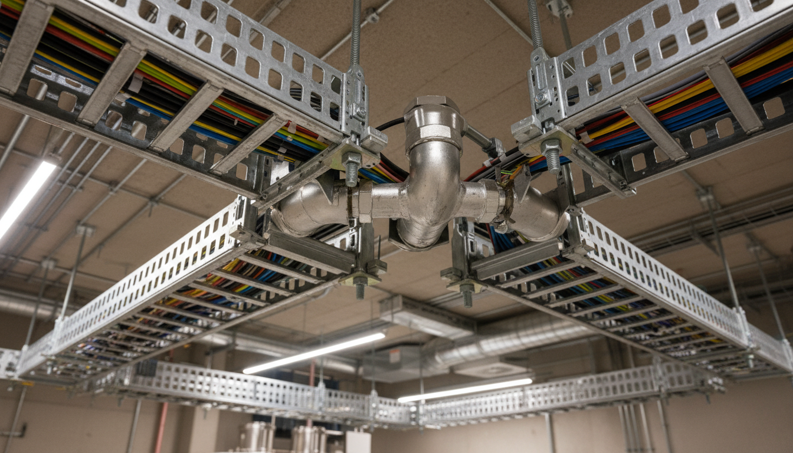
Zone boundary — access control system at entry to controlled radiological zone. Interlock logic and dosimetry point per radiation protection study.
General Information
| Field | Data |
|---|---|
| Room name | Personnel / Material Airlock — Controlled Zone |
| Indicative area | 4 to 8 m² |
| Service hours | Per production schedule |
| Occupation | Authorised personnel |
| Staffing | 1 to 2 persons occasionally |
| Description | Airlock enabling access control, gowning, transition between cold zone and controlled zone, and management of personnel or material flows. Interlock doors if required by radiation protection study. Clean/dirty separation if GMP zone requires it. |
| Acoustic insulation | Standard |
| Strong relationships | Cyclotron bunker, Hot Lab, QC lab, radioactive waste |
Appearance and Finishes
| Element | Specification | Observation |
|---|---|---|
| Ceiling | Washable | Hygiene |
| Walls | Washable | Decontaminable |
| Floor | Decontaminable PVC or resin | Anti-slip |
| Skirting | 10 to 15 cm | Washable |
| Door | Access control / interlock if required | Zone separation |
Furniture and Utilities
| Description | Category | Qty | Observation |
|---|---|---|---|
| Changing bench | Furniture | 01 | Clean/dirty separation if required |
| PPE cabinet | Furniture | 01 | Gowns, gloves, protections |
| Dosimetry support | Safety | 01 | Personal dosimeters (Re.07) |
Equipment and Networks
| Description | Ref. IBA | QTY | ELE | HVAC/Cool. | GAS/DRN | DATA/BMS | Power / Obs. |
|---|---|---|---|---|---|---|---|
| Access control system | — | 01 | Yes | — | — | Yes | Low |
| Controlled zone signage | — | 01 lot | — | — | — | — | N/A |
| Handwash basin (if required) | — | 01 | — | — | EFS/DRN | — | To be validated |
| Contamination monitor (if required) | — | 01 | Yes | — | — | Yes | Per radiation protection |
Coordination Notes
08
The references below are included as scoping resources. Final compliance must be verified with the applicable national regulations and competent authorities.
IAEA — Cyclotron Produced Radionuclides: Guidelines for Setting Up a Facility (TRS 471)
https://www-pub.iaea.org/MTCD/Publications/PDF/trs471_web.pdf
IAEA — Cyclotron Produced Radionuclides: Guidance on Facility Design and Production of [18F]FDG
https://www-pub.iaea.org/MTCD/Publications/PDF/Pub1515_Web.pdf
IAEA — Radiation Protection and Safety of Radiation Sources: International Basic Safety Standards, GSR Part 3
https://www-pub.iaea.org/MTCD/Publications/PDF/Pub1578_web-57265295.pdf
European Commission — EudraLex Volume 4, EU GMP Guidelines, Annex 1 and Annex 3
https://health.ec.europa.eu/medicinal-products/eudralex/eudralex-volume-4_en
ISO 14644-1:2015 — Cleanrooms and Associated Controlled Environments: Classification of Air Cleanliness
https://www.iso.org/standard/53394.html
WHO — Good Manufacturing Practices for Radiopharmaceutical Products (TRS 1025 Annex 2)
https://cdn.who.int/media/docs/default-source/medicines/who-technical-report-series-who-expert-committee-on-specifications-for-pharmaceutical-preparations/trs1025-annex2.pdf
USP General Chapter <825> — Radiopharmaceuticals: Preparation, Compounding, Dispensing and Repackaging
https://www.usp.org/small-molecules/general-chapter-825
AERB — Safety Guide No. AERB/RF-RS/SG-3: Medical Cyclotron Facilities
https://aerb.gov.in/storage/uploads/documents/regdocnEFpk.pdf
IBA (Ion Beam Applications) — Cyclone KIUBE 180 Technical Documentation & Item List
Drawing Ref. 0746770004b / Item List Ref. 0746770410b Rev. B — IBA proprietary document, 25.10.2021